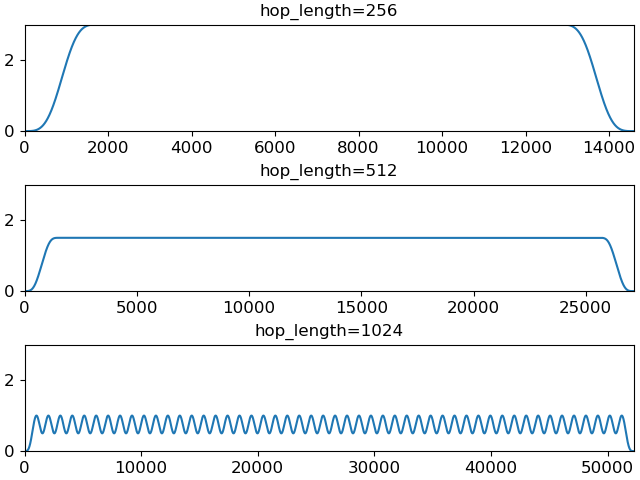

librosa.filters.window_sumsquare¶
- librosa.filters.window_sumsquare(*, window, n_frames, hop_length=512, win_length=None, n_fft=2048, dtype=<class 'numpy.float32'>, norm=None)[source]¶
Compute the sum-square envelope of a window function at a given hop length.
This is used to estimate modulation effects induced by windowing observations in short-time Fourier transforms.
- Parameters
- windowstring, tuple, number, callable, or list-like
Window specification, as in
get_window- n_framesint > 0
The number of analysis frames
- hop_lengthint > 0
The number of samples to advance between frames
- win_length[optional]
The length of the window function. By default, this matches
n_fft.- n_fftint > 0
The length of each analysis frame.
- dtypenp.dtype
The data type of the output
- norm{np.inf, -np.inf, 0, float > 0, None}
Normalization mode used in window construction. Note that this does not affect the squaring operation.
- Returns
- wssnp.ndarray, shape=``(n_fft + hop_length * (n_frames - 1))``
The sum-squared envelope of the window function
Examples
For a fixed frame length (2048), compare modulation effects for a Hann window at different hop lengths:
>>> n_frames = 50 >>> wss_256 = librosa.filters.window_sumsquare(window='hann', n_frames=n_frames, hop_length=256) >>> wss_512 = librosa.filters.window_sumsquare(window='hann', n_frames=n_frames, hop_length=512) >>> wss_1024 = librosa.filters.window_sumsquare(window='hann', n_frames=n_frames, hop_length=1024)
>>> import matplotlib.pyplot as plt >>> fig, ax = plt.subplots(nrows=3, sharey=True) >>> ax[0].plot(wss_256) >>> ax[0].set(title='hop_length=256') >>> ax[1].plot(wss_512) >>> ax[1].set(title='hop_length=512') >>> ax[2].plot(wss_1024) >>> ax[2].set(title='hop_length=1024')
